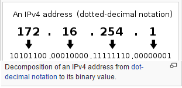

It’s almost ironic, the extent that as humans we use tools without an understanding of how they actually work. As waves of children are born into a world abundant with incredible technological support and opportunity, it can be daunting the amount of knowledgeable catching up we have to do in order to get actively involved ourselves!
It’s no surprise then, that when asked the questions “what is the ‘internet’?”, and “how does it work?”, that the average person may be left somewhat perplexed at their inability to fathom a correct answer. So, starting at square one with a blank canvas, let’s delve into just how our omnipresent, virtually interconnected world maintains such a status, as we explore the architecture of the web…
| The internet is a big, confusing mess, orchestrated by geniuses and businesses alike. |
| This mess is dictated by standards that provide a backbone to the higher level interaction you likely want to achieve. |
| A general understanding of these key-terms and the functions of these protocols is necessary in building your knowledge of any web-related subject. |
Defined as “a global computer network providing a variety of information and communication facilities”, the concept of an ‘internet’ of people rather surprisingly harkens from the days of carrier pigeons and couriers. Nowadays, it comprises of a vast network of cables underpinning the infrastructure and oceans of planet Earth- nifty, huh?
The web has grown infinitesimally large since its conception. It acts as a tool that has minutely changed the way we live, and is now therefore literally shaping our cultures. Abstractly, it is simply an incredibly convenient space to exchange information, but utility-wise, it has the power to birth, as Berners-Leethe man himself, dubbed 'father' of the internet. aptly described, ‘semantic… intelligent agents’; it’s a virtual organism!
So you’d assume then, for such an established, complex, and large systemCheck out this awesome interactive map of the internet! to exist, there must be standards in place that dictate how everything works?..
You'd be right! Boy, are you in for a treat. The encapsulated content in the boxes below should one-by-one fill you in on key concept and stages of the pipeline that is interacting with the internet.
Timeline of key events in developmental history:
As the physical internet provides an infrastructure that allows hardware devices to physically connect to one another, protocols determine how the communicationthe different rulesets that govern these types of transferrals have specific benefits - security, speed.. between them is organised and allowed to occur. There are several different protocols that assist specific ways in which data is hurled from your hard-drive into the void, however the one you’ll have definitely heard of is ‘HTTPhypertext transfer protocol’, which is core for web-transactions.
Most of these services function on a client/server model, whereby local clientssoftware such as web-browsers access centralised remote servershosts of the content. Others may use ‘peer-to-peer’, which allows directfor things like 'voice-over-ip', where self-hosting is preferable and easier to manage access to another device.
When stacked together, these protocols build services, but what does the mortar look like between the bricks? Well, there’s a uniquely defined system in place that pivots off the deconstruction and comprehension of data 'packets'...
The TCPtransmission control protocol is the heart of the internet’s communication- it breaks outgoing messages into packets, and stitches together incoming ones.
Reminiscent of computer architecture, these packets of information have specific discernible features that describe how to handle them, along with their actual data- this includes a head and a body.
So, understanding the delivery, let’s inspect the deliverer. The IPinternet protocol handles the delivery of these packets to devices with a numeric address, in a process called routing(this is connectionless, meaning that the data can travel via multiple routes to reach its destination- it’s pushed there). To reduce errors such as packet-loss (as they’re delivered out of sequence) or corruption, they are protected under a system of ‘best effort delivery’, in which on-arrival TCP checks the received information, and can re-request certain bits.
I’ve been analogising the physical postal service throughout by my choice of words, however it’s apparent that a lot of virtual systems draw heavily from real-world models- this is particularly apparent in areas that once explained, already feel very familier- their logicality, behind all of the big scary words, makes a lot of sense!
To elaborate on the subject of IP, and with its technicalities aside, it’s now time to apply a veneer of usefulness for the average user- most of the aforementioned actions happen invisibly. Domain names are a beautifully simple solution to a concerning problem- how do I find a website? Put simply, a domain refers to an IP address, and a domain name is a linked, human-readable identifier. Globally managed ‘Domain Name Servers’ serve as vast, virtual directories that propagate registered names across their systems. This allows us to personalise our locations. The relaxedness of domain-name-registration, which follows an LDHletters, digits, hyphens rule, has actually accidentally helped malicious efforts such as 'phishing', which sometimes involves spoofing a another website's name to bait users into their own.
When you type a website in your address-bar, you’re simply asking a DNS to look up the address linked to the name, so you can establish a TCP connection with that website.
Syntax:
The syntax for domain names is rather interesting- the heirarchy spans right-to-left, and consists of labels- each label specifies a sub-division, may contain up to 63 charactersin total not exceeding 253, and starts (reading, ends) with a top-levelthese are either country-oriented, like 'com', 'uk'... or generic- a base which has expanded vastly thanks to investments to incorporate 'ninja', 'xxx' and even 'bacon' domain. As a point of interest, crafty people have taken to concatenating these labels into neologisms that describe their website, in a process called 'domain hacking', such as 'http://www.examp.le/'.
You may already know of '127.0.0.1'; the loopback IP address also referred to as 'localhost'. It's used to establish a connection to your own computer, to let you host your own server that you can connect to yourself for purposes ranging from debugging to playing video games. But why that specific address?..
Fortunately, somebody did some sleuthing over on the 'Stack' forums, which detailed:
"The address zero is to be interpreted as meaning “this”, as in “this network”- for example, the address 0.0.0.37 could be interpreted as meaning host 37 on this network. The class A network number 127 is assigned the “loopback” function, that is, a datagram sent by a higher level protocol to a network 127 address should loop back inside the host. No datagram “sent” to a network 127 address should ever appear on any network anywhere.
Even as early as September 1981 RFC 790, 0 and 127 were already reserved for this purpose."
Another user posits:
"The values 0, 127 and 255 are special in 8 bit assembly and machine language programming because there are "tricks" you can use to test for these values and branch to different code using smaller instructions that execute faster than for other integers. 127 is the highest signed 8 bit integer, so incrementing it by 1 will cause a signed overflow."
This doesn't entirely put the mystery to rest, but it's clear that it was set aside for a reason, and now you know what it does!
Clients are essentially just pieces of software that send and recieve HTTP requests- they're generally composed of the same guts, but each may provide unique context-specific features. Web browsers are the most obvious example, however the scope of a client can extend to anything that accesses the internet and interpolates with a server.
Servers are pieces of software that listen to network ports for incoming requests, and respond accordingly. Multiple servers can be ran on one machine simultaneously, and they sometimes provide extraneous service as a stack, such as LAMPnamed as an acronym of the names of its original four components: the linux operating system, the apache http server, the mysql relational database management system, and the php programming language to provide a cloud-like
This is a huge business! virtual machine to do with what you will.
Typically, servers locate resources for you, control access to said resources, and manage traffic- some can get very busy.